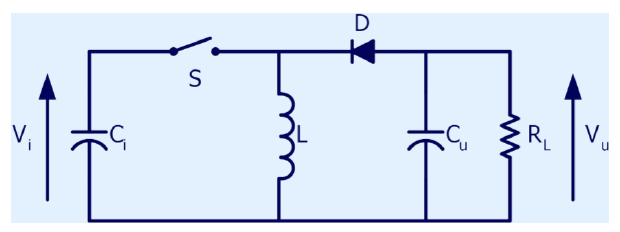
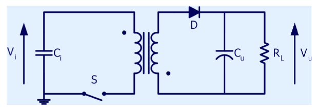

34. Boost, buck-boost va flyback: sxemani tanish va formulalar
1. Uch asosiy topologiya bir rasmda
Hammasida bir xil qismlar bor: kalit SW, induktivlik L, diod D, kondensator C, yuklama. Farqi faqat ularning joylashuvida.
| Turi | Kirishdan ketma-ket | Yerga ulangan | Formula | VO |
|---|---|---|---|---|
| Buck | kalit, keyin L | diod | VO = D·VI | ≤ VI |
| Boost | L, keyin diod | kalit | VO = VI/(1 − D) | ≥ VI |
| Buck-boost | kalit, keyin diod (teskari) | L | VO = −VI·D/(1 − D) | teskari qutb, |VO| kichik yoki katta |
| Flyback | kalit + transformator | — | D va o'ramlar nisbatiga bog'liq | galvanik ajratilgan |
2. Boost (ko'taruvchi, VO ≥ VI)
- ON (D·T): kalit yopiq, L to'g'ridan-to'g'ri VI ga ulangan. VL = VI → tok o'sadi: ΔI = VI·TON/L. Diod yopiq, yuklamani C boqadi. L energiya yig'adi.
- OFF ((1 − D)·T): kalit ochiq. L tokni davom ettiradi, tok diod orqali chiqishga o'tadi. VL = −(VO − VI) → tok kamayadi.
Muvozanat: VI·TON = (VO − VI)·TOFF. Ikkala tomonni T ga bo'lamiz: VI·D = (VO − VI)(1 − D) → VI = VO(1 − D):
VO / VI = 1 / (1 − D)D = 0 → VO = VI; D = 0.5 → VO = 2VI; D = 0.75 → VO = 4VI. D → 1 bo'lsa nazariy cheksiz.
3. Buck-boost (teskari qutbli)
- ON: kalit yopiq, L VI ga ulangan: VL = VI, tok o'sadi. Diod yopiq.
- OFF: kalit ochiq, L toki diod orqali chiqish kondensatoriga oqadi, lekin teskari yo'nalishda zaryadlaydi: VL = VO (manfiy).
Muvozanat: VI·TON = −VO·TOFF:
VO / VI = −D / (1 − D)Chiqish doim teskari qutbli (VI > 0 → VO < 0). Moduli D < 0.5 da VI dan kichik, D > 0.5 da katta, D = 0.5 da teng.
4. Flyback (transformatorli)
Flyback = buck-boost, faqat L o'rniga transformator (ikki o'ramli g'altak). Afzalligi: kirish va chiqish o'rtasida galvanik ajratish (galvanic isolation) bor, ya'ni elektr ulanish yo'q, energiya faqat magnit maydon orqali o'tadi. Bu xavfsizlik uchun muhim (masalan 220 V tarmoqdan quvvat olganda). Teskari aloqa ham ajratilgan bo'lishi kerak: optik juftlik (optocoupler) ishlatiladi.
Uzatish koeffitsienti D ga va transformator xususiyatiga (o'ramlar nisbatiga) bog'liq. Chiqish qutbi transformator o'ramlari qanday ulanganiga (nuqtalar) bog'liq.
Tarmoq quvvat manbai (blok sxema)
- A: EMI filtr (shovqinni tarmoqqa qaytarmaslik).
- B: AC → DC (to'g'rilagich, 220 V, 50 Hz).
- C: impulsli kalit (DC → yuqori chastotali AC, masalan 500 kHz).
- D: kichik yuqori chastotali transformator (AC → AC).
- E: AC → DC (chiqish to'g'rilagichi va filtri).
- Teskari aloqa chiqishdan C ga.
Yuqori chastota tufayli transformator juda kichik bo'ladi (telefon zaryadlovchisi shunday ishlaydi).
5. Shovqin qaysi tomonga ketadi
Qoida: tok impulsli (0 va katta qiymat orasida sakraydigan) bo'lgan tomonga shovqin ko'proq tushadi. L turgan tomonda tok tekis.
| Turi | Kirish toki | Chiqish toki | Shovqin |
|---|---|---|---|
| Buck | impulsli (kalit ketma-ket) | tekis (L ketma-ket) | kirishga ko'proq |
| Boost | tekis (L ketma-ket) | impulsli (diod orqali) | chiqishga ko'proq |
| Buck-boost | impulsli | impulsli | ikkalasiga teng |
6. Imtihon test savollari (asl matn bilan)
Sxemani tanish:
014. The following schematic represents: a) a flyback power regulator circuit b) a buck power regulator circuit c) a buck-boost power regulator circuit d) a boost power regulator circuit

Javob
c) buck-boost. Kalit ketma-ket, L yerga, diod chiqishga teskari yo'nalishda.
063. The following schematic represents: a) a buck power regulator b) a half-wave rectifier with filter c) a flyback power regulator d) a boost power regulator

Javob
d) boost. L kirishda ketma-ket, kalit yerga, diod chiqishga.
006. The following schematic represents: a) a buck power regulator b) a half-wave rectifier with filter c) a flyback power regulator d) a boost power regulator

Javob
c) flyback. Transformator + kalit birlamchi tomonda + diod va C ikkilamchi tomonda.
080. For the circuit in the schematic below: a) the output voltage cannot be higher than the input voltage b) polarity of the the output voltage is always the same as the input c) polarity of the the output voltage is always inverted to the input d) the output voltage cannot be lower than the input voltage

Javob
b) (rasmiy javob). Bu flyback: transformator o'ramlari (nuqtalar) shunday ulanganki, chiqish kirish bilan bir xil qutbli. Flyback chiqishi kirishdan katta ham, kichik ham bo'lishi mumkin (a va d noto'g'ri).
Formulalar va bog'liqlik:
105. The output (regulated) voltage of a boost power regulator can be: a) Lower or equal to the input voltage b) Higher or equal to the input voltage c) Higher than the input voltage d) Lower than the input voltage
Javob
b) VO = VI/(1 − D) ≥ VI (D = 0 da teng).
079. The voltage gain of a boost voltage regulator with duty cycle D = 0.75 is: a) 0.75 b) 0.25 c) 1.33 d) 4
Javob
d) 4: 1/(1 − 0.75) = 1/0.25 = 4.
020. A buck-boost power regulator with an inductance: a) cannot increase the input voltage on the output b) cannot decrease the input voltage on the output c) cannot regulate the output voltage equal to the input d) its output voltage has inverse polarity to the input
Javob
d) VO = −D/(1 − D)·VI.
052 / 048. The transfer function in continuous current mode of an ideal boost (048: buck-boost) power regulator depends on: a) the value of the inductance b) the characteristics of the diode c) the switch duty cycle d) the value of the load
Javob
Ikkalasida c) the switch duty cycle.
018. The transfer function in continuous current mode of an ideal flyback power regulator depends on: a) the characteristics of the diode b) the switching duty cycle c) the galvanic insulation d) the value of the load
Javob
b) the switching duty cycle.
111. The transfer function in continuous current mode of an ideal flyback power regulator depends on: a) the characteristics of the diode b) the characteristics of the electrical transformer c) the galvanic insulation d) the value of the load
Javob
b) the characteristics of the electrical transformer (o'ramlar nisbati). Diqqat: 018 va 111 deyarli bir xil, lekin variantlar boshqa. Variantlar ichida "duty cycle" bo'lsa uni, bo'lmasa "transformer" ni tanlang.
025. The output circuit is galvanically insulated from the input circuit for: a) buck power regulators b) boost power regulators c) flyback power regulators d) buck-boost power regulators
Javob
c) flyback (faqat unda transformator bor).
Shovqin:
043. A boost power regulator injects noise: a) more in the output circuit b) more in the input circuit c) equivalent in both input and output circuits d) operates smoothly, not relevant noise
Javob
a) more in the output circuit.
047. A buck-boost power regulator injects noise: (xuddi shu variantlar)
Javob
c) equivalent in both input and output circuits.
2021-07 test. A parasitic series resistance of the inductor of a buck-boost dc-dc converter: (a) Increases the power dissipated by the switches. (b) Increases the active power dissipated by the capacitors. (c) Decreases the switching frequency. (d) Dissipates power in the inductor.
Javob
(d). L orqali o'tuvchi tok uning qarshiligida quvvat yo'qotadi (I²·RL). Chastotani tashqi sxema beradi; ideal kalit va kondensator aktiv quvvat yo'qotmaydi.
- Boost, VI = 5 V, VO = 12 V kerak. D = ?
- Buck-boost, VI = 12 V, D = 0.6. VO = ?
- Qaysi sxemada chiqish toki tekis bo'ladi: buck yoki boost?
Javoblar
- 1 − D = 5/12 → D = 7/12 ≈ 0.58.
- VO = −12·0.6/0.4 = −18 V.
- Buck (L chiqishga ketma-ket).
7. 2019 imtihonlaridan: formulani keltirib chiqarish (4–6 ball)
2019-06 A: Draw the schematic of a buck-boost converter (1 point). Which is the control variable of the converter? (1 point). Derive (that is not just writing the result) the value of the input/output transfer function as a function of the control variable assuming that the converter is operating in CCM (4 points)
2019-06 B: xuddi shu savol, lekin boost converter uchun. 2019-07: Draw the schematic of a buck-boost converter (2 point). Which is the control variable of the converter? (2 point)
4 qadamli retsept
- Boshqaruvchi kattalik (control variable): kalitni boshqaruvchi signalning duty cycle D si. Rasmiy javob: "The control variable of the converter is the duty cycle D of the waveform controlling the switch."
- T1 (kalit ON) va T2 (kalit OFF) da induktivlikdagi kuchlanish VL ni yozing.
- Tok chiziqli o'zgaradi: ΔI = (VL/L)·T. T1 dagi o'sish = T2 dagi kamayish (Ib − Ia).
- T1 = D·Tsw, T2 = (1 − D)·Tsw qo'yib, VU/VI ni toping.
Buck-boost (2019-06 A, rasmiy yechim)
Sxema: VI → kalit → (L yerga) → diod (teskari) → CU ‖ yuklama → VU.
T1 da: VL = VI → Ib = Ia + (VI/L)·T1 → Ib − Ia = (VI/L)·T1.
T2 da: VL = VU → Ia = Ib + (VU/L)·T2 → Ib − Ia = −(VU/L)·T2.
Tenglashtiramiz: (VI/L)·T1 = −(VU/L)·T2 → VU/VI = −T1/T2.
T1 = D·Tsw, T2 = (1 − D)·Tsw:
VU/VI = −D/(1 − D) = D/(D − 1)Boost (2019-06 B, rasmiy yechim)
Sxema: VI → L → diod → CU ‖ yuklama → VU; kalit L va diod orasidan yerga.
T1 da: VL = VI → Ib − Ia = (VI/L)·T1.
T2 da: VL = VI − VU → Ia = Ib + ((VI − VU)/L)·T2 → Ib − Ia = ((VU − VI)/L)·T2.
Tenglashtiramiz: VI·T1 = (VU − VI)·T2 → VI·(T1 + T2) = VU·T2 → VU/VI = (T1 + T2)/T2 = Tsw/((1 − D)Tsw):
VU/VI = 1/(1 − D)Javob
(VI − VU)·T1 = VU·T2 → VI·T1 = VU·(T1 + T2) → VU/VI = D.Yangi atamalar
| Atama | Inglizchasi | Ma'nosi |
|---|---|---|
| Boost | boost (step-up) | Ko'taruvchi: VO = VI/(1 − D) |
| Buck-boost | buck-boost (inverting) | Teskari qutbli: VO = −VI·D/(1 − D) |
| Flyback | flyback | Transformatorli buck-boost |
| Transformator | transformer | Ikki o'ramli g'altak, magnit orqali uzatadi |
| Galvanik ajratish | galvanic isolation (insulation) | Kirish va chiqish orasida elektr ulanish yo'q |
| Optojuftlik | optical coupling, optocoupler | Signalni yorug'lik orqali ajratib uzatish |
| Uzatish funksiyasi | transfer function (ratio) | VO/VI |
| Shovqin kiritadi | injects noise | Impulsli tok tomonga shovqin tushadi |
| Parazit qarshilik | parasitic series resistance | L simining qarshiligi, quvvat yo'qotadi |
📝 Konspekt (daftarga yozib oling)
- Tanish: buck = kalit ketma-ket + diod yerga + L chiqishda; boost = L kirishda + kalit yerga + diod chiqishga; buck-boost = kalit ketma-ket + L yerga + diod teskari; flyback = transformator.
- CCM da uzatish faqat D ga bog'liq (flyback da yana transformatorga).
- Galvanik ajratish faqat flyback da.
- Shovqin: buck → kirishga, boost → chiqishga, buck-boost → ikkalasiga.
- L ning parazit qarshiligi L da quvvat yo'qotadi.
- Javoblar: 014 → c; 063 → d; 006 → c; 080 → b; 105 → b; 079 → d (4); 020 → d; 052 → c; 048 → c; 018 → b; 111 → b; 025 → c; 043 → a; 047 → c; 2021-07 → d.
- Keltirib chiqarish (2019): VL ni T1 va T2 da yozing → (VL1/L)·T1 = −(VL2/L)·T2 → T1 = D·Tsw, T2 = (1 − D)·Tsw. Boshqaruvchi kattalik: duty cycle D.